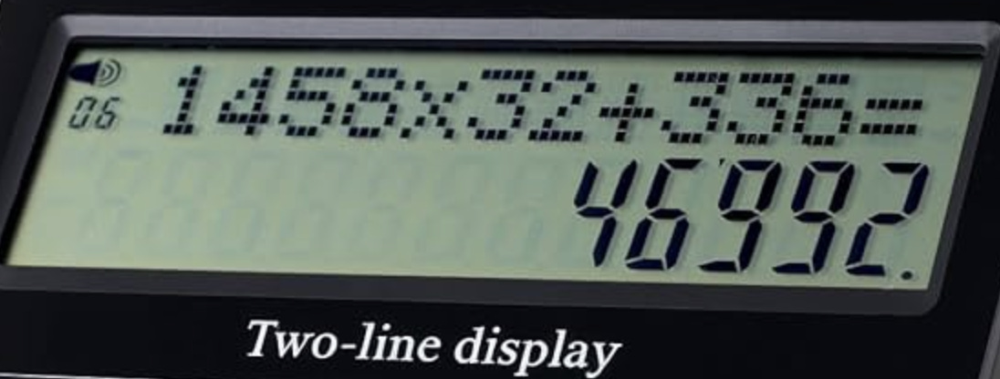
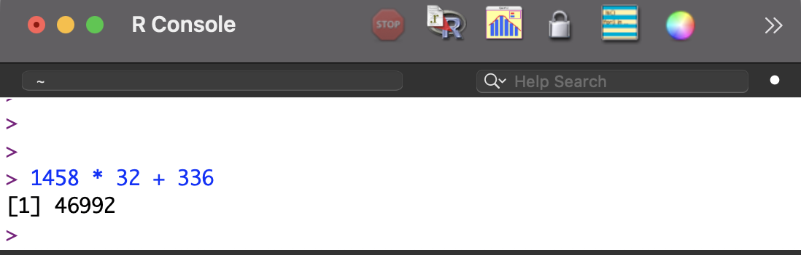
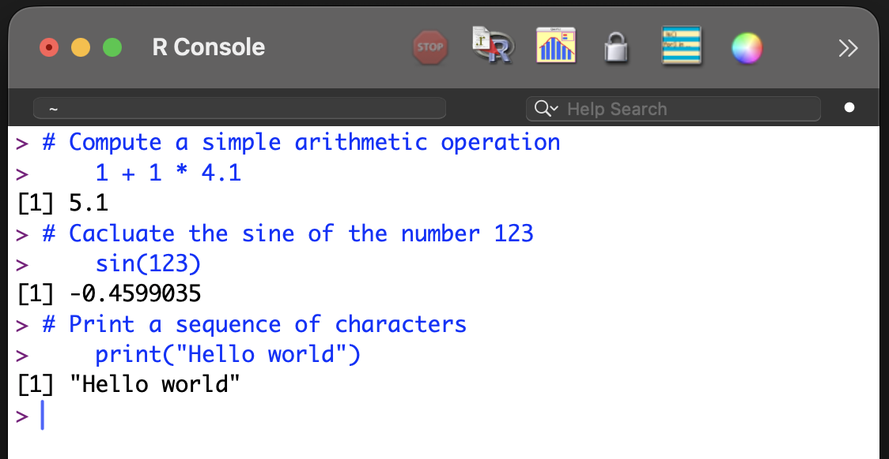
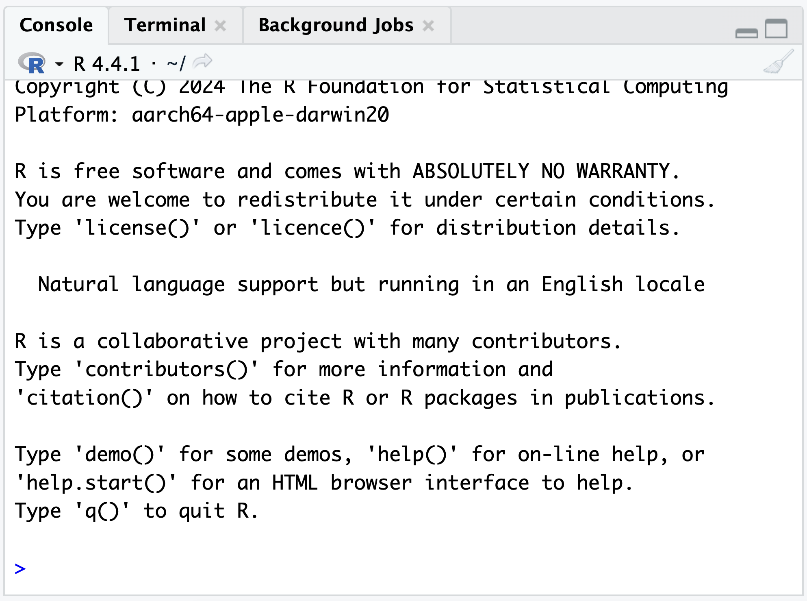
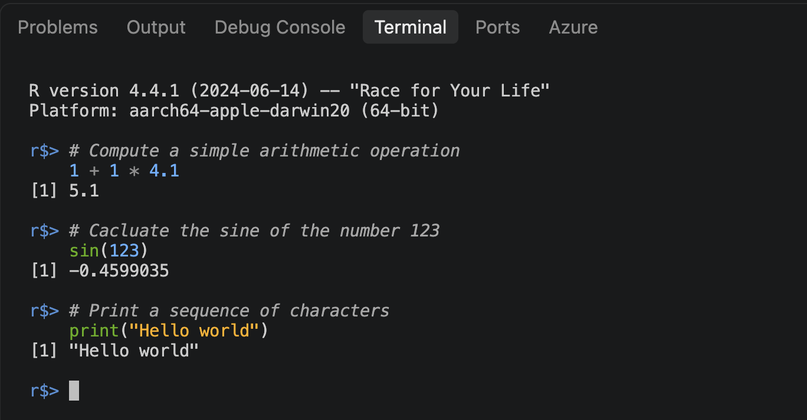
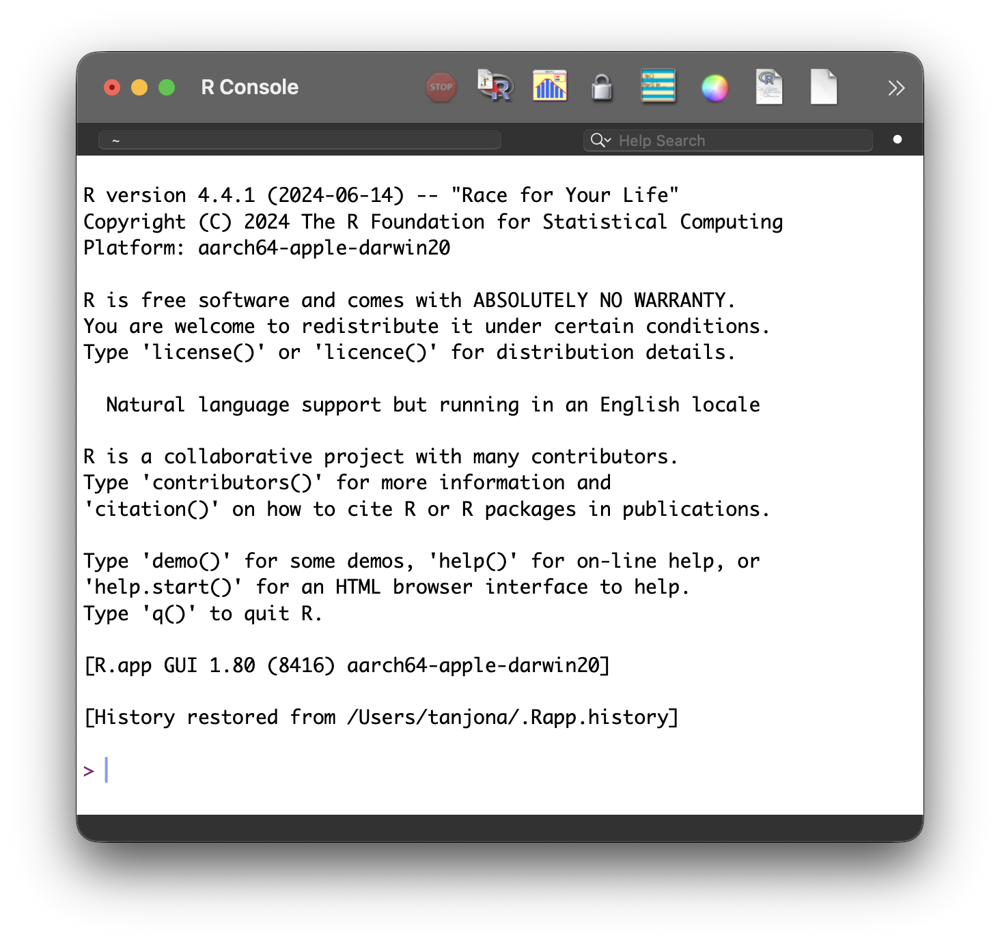
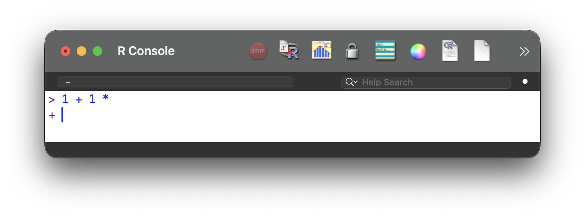

# Compute a simple arithmetic operation
1 + 1 * 4.1[1] 5.1Ecran’na calculatrice
Everyone knows how to use a calculator:
With most basic calculators, the display shows both the calculation (top line: this is a useful added feature to ensure the correct operation was entered) and the result on the bottom line Figure 26.1 (a).


A console functions exactly like the interface of a calculator Figure 26.1 (b):
Conceptually, the console is the interface that displays communication with the program. It shows the input and displays the output. This simple interface is common to many programs.
An R console is an interactive command-line interface that allows commands to be typed directly, executed immediately, and evaluated in real time. It operates on a continuous cycle known as a Read-Eval-Print Loop (REPL):
R could be used with the native R Graphic User Interface (GUI), or with specific IDE (Chapter 28) like RStudio or Visual Studio Code. The aesthetic of the console is different in each program.



As an exercise, open R or RStudio and try entering the command below. The code is shown in gray, and the output should appear in black after execution. While copy and paste can be used, entering the text manually is highly recommended.
# Compute a simple arithmetic operation
1 + 1 * 4.1[1] 5.1# Cacluate the sine of the number 123
sin(123)[1] -0.4599035# Print a sequence of characters
print("Hello world")[1] "Hello world"The console is just the display; the program that performs the actual calculation runs in the background.
A displayed prompt cannot be edited.
Typing directly into the console is not recommended; using a script editor (Chapter 27 and Chapter 28) is preferred.
Error message: This indicates that something is wrong with the code. It can be frustrating, but it is common (Chapter 42).
The mouse is useless in the console. It is designed to work with commands type on the keyboard, hence the name command-line interface.
When opening R or RStudio for the first time, the console displays the program version, licensing information, and a few basic commands.


To finish the evaluation, either:
Command, code, and script are often used interchangeably to refer to the text typed for the program to evaluate.1
A prompt is the input indicator (e.g., >), although in the context of modern Artificial Intelligence, “prompt” also refers to the text instruction.
Run, evaluate, and execute can be used interchangeably.
Command-line interface (CLI), terminal, and console refer to the same concept in simple terms.2